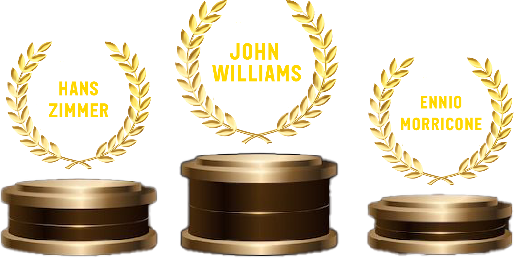

CineGraph
When music hits the big screen
Which genres shine at the Oscars ?
This graph illustrates the distribution of film genres nominated in the Oscar music categories. It highlights trends over the years and allows us to observe the evolution of the film styles promoted by the Academy. We can thus identify which genres are gaining popularity, which are fading away, and how the musical landscape of cinema is changing over time.
They make the best film music
Discover the podium of the three composers most nominated for Oscars. True legends of film music, they have shaped the history of cinema with soundtracks that stand the test of time. Their melodies heighten emotions, bring images to life and leave a lasting impression on viewers' imaginations. Through their works, they prove that music is the soul of the seventh art.

TITRE - Artiste
Titre du film - Réalisateur (Date de sortie)
vendu à environ nombre de ventes millions d'exemplaires.description du film
.png) Voir le film
Voir le filmWe know them by heart
Discover the top 10 best-selling film soundtracks in history.